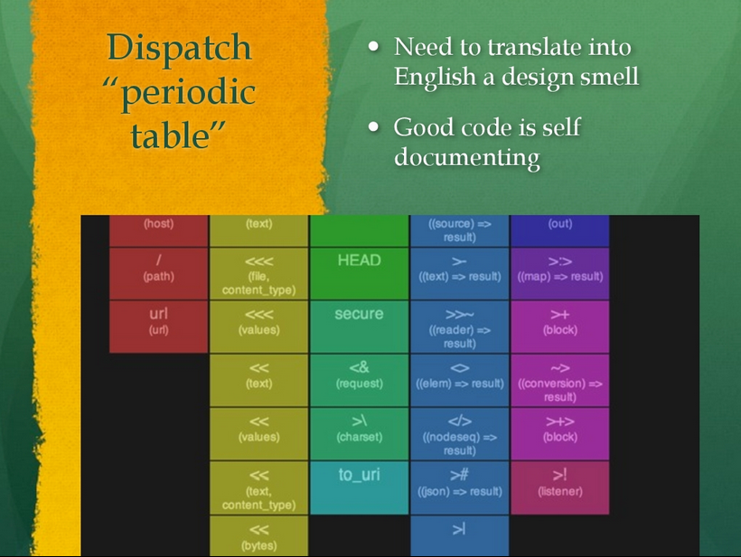
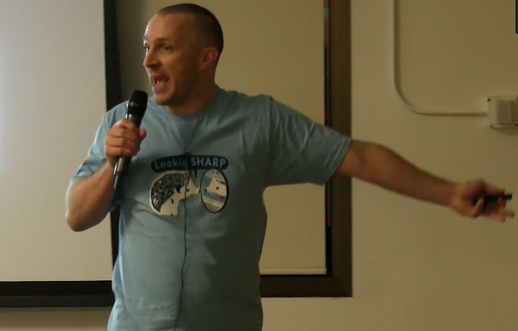
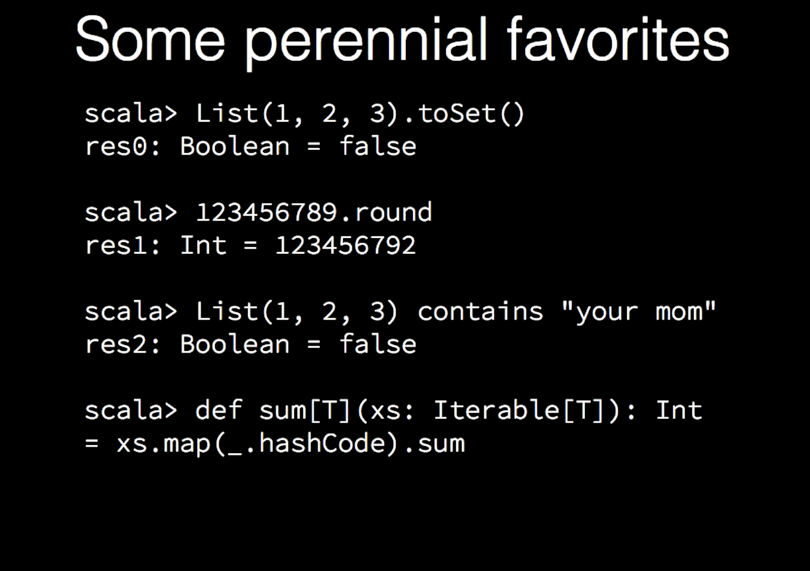

The Dark Side of Scala
Tomasz Nurkiewicz
Programming is the art of telling another human what one wants the computer to do- Donald Knuth
Daniel - Briton Rivière (1872)
Tomasz Nurkiewicz
 |
|
FUD
 |
 |
|  |  |
val
is better than Java's
final?
JavaScript hoisting
var r = double(1) + triple(1);
function double(x) {return x * 2;}
var triple = function(x) {return x * 3;}
Throws:
TypeError: triple is not a functionHoisting in Scala?!
class Vals {
val r = double(1) + triple(1)
def double(x: Int) = x * 2
val triple = (x: Int) => x * 3
}
Throws:
java.lang.NullPointerException
at Vals.<init>(Vals.scala:2)
Simplified
class Vals {
println(answer)
private[this] val answer = 42
} Prints... 0
return in lambda
def samples(xs: TraversableOnce[Int]) {
xs map {x => return x * 10} foreach println
}
Never prints anything
The Scala Language Specification
6.20 Return Expressions
Collections

java.util.ArrayList

scala.collection.immutable.List
Source: github.com/tpolecat/examples/raw/master/doc/List.pdf
Seq-ish
val p = Seq(1,2,3).permutations
if (p.size < 10) {
//p.size is 6
p foreach println
}
Never prints anything
map in Clojure
(defn map [f coll]
(lazy-seq
(if-not (empty? coll)
(cons
( f (first coll))
(map f (rest coll))))))
...Haskell...
map :: (a -> b) -> [a] -> [b]
map _ [] = []
map f (x:xs) = f x : map f xs
...and Scala
def map[B, That](f: A => B)
(implicit bf: CanBuildFrom[Repr, B, That]): That = {
def builder = {
val b = bf(repr)
b.sizeHint(this)
b
}
val b = builder
for (x <- this)
b += f(x)
b.result
}
def repr: Repr = this.asInstanceOf[Repr]
Type system
- Invariant/covariant/contravariant types (
T,+Tand-T) - Refined types (
new Foo {...}) - Structural types (
x: {def y: Int}) - Path dependant types (
a.B) - Specialized types (
@specialized) - Self types (
this =>) - Projection types (
A#B) - Existential types (
M[_]) - Type bounds (
<:,>:) - Type constraints (
=:=,<:<and<%<) - Type members (
type T) - Type aliases (
type T = Int) - Type classes (
(implicit ...)) - View bounds (
<%) - Higher kinded types (
* => *) - F-Bounded type polymorphism (
M[T <: M[T]]) - ...
Compilation error, 7K long
[error] C:\Work\CompStak\CompStak-services\persistence\src\main\scala\com\compstak\persistence\Tables.scala:1628: type mismatch; [error] found : scala.slick.collection.heterogenous.HCons[Long,scala.slick.collection.heterogenous.HCons[Long,scala.slick.collection.heterogenous.HCons[Option[String],scala.slick.collection.heterogenous.HCons[Option[String],scala.slick.collection.heterogenous.HCons[Option[String],scala.slick.collection.heterogenous.HCons[Option[String],scala.slick.collection.heterogenous.HCons[Option[String],scala.slick.collection.heterogenous.HCons[Option[String],scala.slick.collection.heterogenous.HCons[Option[String],scala.slick.collection.heterogenous.HCons[Option[String],scala.slick.collection.heterogenous.HCons[Option[String],scala.slick.collection.heterogenous.HCons[Option[String],scala.slick.collection.heterogenous.HCons[Option[String],scala.slick.collection.heterogenous.HCons[Option[String],scala.slick.collection.heterogenous.HCons[Option[String],scala.slick.collection.heterogenous.HCons[Option[String],scala.slick.collection.heterogenous.HCons[Option[java.sql.Timestamp],scala.slick.collection.heterogenous.HCons[Option[String],scala.slick.collection.heterogenous.HCons[Option[String],scala.slick.collection.heterogenous.HCons[Option[String],scala.slick.collection.heterogenous.HCons[Option[String],scala.slick.collection.heterogenous.HCons[Option[String],scala.slick.collection.heterogenous.HCons[Option[String],scala.slick.collection.heterogenous.HCons[Option[String],scala.slick.collection.heterogenous.HCons[Option[String],scala.slick.collection.heterogenous.HCons[Option[String],scala.slick.collection.heterogenous.HCons[Option[String],scala.slick.collection.heterogenous.HCons[Option[String],scala.slick.collection.heterogenous.HCons[Option[String],scala.slick.collection.heterogenous.HCons[Option[String],scala.slick.collection.heterogenous.HCons[Option[String],scala.slick.collection.heterogenous.HCons[Option[String],scala.slick.collection.heterogenous.HCons[String,scala.slick.collection.heterogenous.HCons[Int,scala.slick.collection.heterogenous.HCons[Option[String],scala.slick.collection.heterogenous.HCons[Option[String],scala.slick.collection.heterogenous.HCons[Option[String],scala.slick.collection.heterogenous.HCons[Option[String],scala.slick.collection.heterogenous.HCons[Option[String],scala.slick.collection.heterogenous.HCons[Option[String],scala.slick.collection.heterogenous.HCons[Option[String],scala.slick.collection.heterogenous.HCons[Option[String],scala.slick.collection.heterogenous.HCons[Option[String],scala.slick.collection.heterogenous.HCons[Option[String],scala.slick.collection.heterogenous.HCons[Option[String],scala.slick.collection.heterogenous.HCons[Option[String],scala.slick.collection.heterogenous.HCons[Option[Long],scala.slick.collection.heterogenous.HCons[String,scala.slick.collection.heterogenous.HCons[Option[...],scala.slick.collection.heterogenous.HCons[...,...]]]]]]]]]]]]]]]]]]]]]]]]]]]]]]]]]]]]]]]]]]]]]]]]]] [error] required: Tables.this.CompProposalRawRow [error] (which expands to) scala.slick.collection.heterogenous.HCons[Long,scala.slick.collection.heterogenous.HCons[Long,scala.slick.collection.heterogenous.HCons[Option[String],scala.slick.collection.heterogenous.HCons[Option[String],scala.slick.collection.heterogenous.HCons[Option[String],scala.slick.collection.heterogenous.HCons[Option[String],scala.slick.collection.heterogenous.HCons[Option[String],scala.slick.collection.heterogenous.HCons[Option[String],scala.slick.collection.heterogenous.HCons[Option[String],scala.slick.collection.heterogenous.HCons[Option[String],scala.slick.collection.heterogenous.HCons[Option[String],scala.slick.collection.heterogenous.HCons[Option[String],scala.slick.collection.heterogenous.HCons[Option[String],scala.slick.collection.heterogenous.HCons[Option[String],scala.slick.collection.heterogenous.HCons[Option[String],scala.slick.collection.heterogenous.HCons[Option[String],scala.slick.collection.heterogenous.HCons[Option[java.sql.Timestamp],scala.slick.collection.heterogenous.HCons[Option[String],scala.slick.collection.heterogenous.HCons[Option[String],scala.slick.collection.heterogenous.HCons[Option[String],scala.slick.collection.heterogenous.HCons[Option[String],scala.slick.collection.heterogenous.HCons[Option[String],scala.slick.collection.heterogenous.HCons[Option[String],scala.slick.collection.heterogenous.HCons[Option[String],scala.slick.collection.heterogenous.HCons[Option[String],scala.slick.collection.heterogenous.HCons[Option[String],scala.slick.collection.heterogenous.HCons[Option[String],scala.slick.collection.heterogenous.HCons[Option[String],scala.slick.collection.heterogenous.HCons[Option[String],scala.slick.collection.heterogenous.HCons[Option[String],scala.slick.collection.heterogenous.HCons[Option[String],scala.slick.collection.heterogenous.HCons[Option[String],scala.slick.collection.heterogenous.HCons[String,scala.slick.collection.heterogenous.HCons[Int,scala.slick.collection.heterogenous.HCons[Option[String],scala.slick.collection.heterogenous.HCons[Option[String],scala.slick.collection.heterogenous.HCons[Option[String],scala.slick.collection.heterogenous.HCons[Option[String],scala.slick.collection.heterogenous.HCons[Option[String],scala.slick.collection.heterogenous.HCons[Option[String],scala.slick.collection.heterogenous.HCons[Option[String],scala.slick.collection.heterogenous.HCons[Option[String],scala.slick.collection.heterogenous.HCons[Option[String],scala.slick.collection.heterogenous.HCons[Option[String],scala.slick.collection.heterogenous.HCons[Option[String],scala.slick.collection.heterogenous.HCons[Option[String],scala.slick.collection.heterogenous.HCons[Option[Long],scala.slick.collection.heterogenous.HCons[String,scala.slick.collection.heterogenous.HCons[Option[...],scala.slick.collection.heterogenous.HCons[...,...]]]]]]]]]]]]]]]]]]]]]]]]]]]]]]]]]]]]]]]]]]]]]]]]]] [error] <<[Long] :: <<[Long] :: <<?[String] :: <<?[String] :: <<?[String] :: <<?[String] :: <<?[String] :: <<?[String] :: <<?[String] :: <<?[String] :: <<?[String] :: <<?[String] :: <<?[String] :: <<?[String] :: <<?[String] :: <<?[String] :: <<?[java.sql.Timestamp] :: <<?[String] :: <<?[String] :: <<?[String] :: <<?[String] :: <<?[String] :: <<?[String] :: <<?[String] :: <<?[String] :: <<?[String] :: <<?[String] :: <<?[String] :: <<?[String] :: <<?[String] :: <<?[String] :: <<?[String] :: <<[String] :: <<[Int] :: <<?[String] :: <<?[String] :: <<?[String] :: <<?[String] :: <<?[String] :: <<?[String] :: <<?[String] :: <<?[String] :: <<?[String] :: <<?[String] :: <<?[String] :: <<?[String] :: <<?[Long] :: <<[String] :: <<?[Long] :: <<?[Long] :: <<?[Int] :: <<?[Int] :: <<?[String] :: <<?[Boolean] :: <<[Boolean] :: <<?[String] :: <<?[String] :: <<?[String] :: <<?[String] :: <<?[String] :: <<?[String] :: <<?[String] :: <<?[String] :: <<?[String] :: <<?[String] :: <<?[String] :: <<?[String] :: <<?[String] :: <<?[String] :: <<?[String] :: <<?[String] :: <<?[String] :: <<[Boolean] :: <<?[String] :: <<?[String] :: <<?[String] :: <<?[String] :: <<?[String] :: <<?[String] :: <<?[String] :: <<?[String] :: <<?[String] :: <<?[String] :: <<?[String] :: <<?[String] :: <<?[String] :: <<?[Long] :: <<?[String] :: <<?[String] :: HNil [error] ^
Source: groups.google.com/d/topic/scalaquery/GIptm2LUExg/discussion
Compiles:
def f(x: Int) {}
def f(s: String) {}
Seq(1, 2) foreach f
NOT:
def f(x: => Int) {}
def f(s: => String) {}
Seq(1, 2) foreach f
Syntax
Macros in Clojure
(defmacro log-expr [s]
`(println (str "Value of " '~s " is " ~s)))
Result:
user=> (log-expr (inc 2))
Value of (inc 2) is 3
Macros in Scala
object LogMacros {
import language.experimental.macros
import reflect.macros.whitebox.Context
def logExpr(s: Any) = macro logExprInternal
private def logExprInternal(c: Context)
(exp: c.Expr[Any]): c.Expr[Unit] = {
import c.universe._
val text = show(exp.tree)
val literal = Literal(Constant(text))
val str = c.Expr[String](literal)
reify {
println(s"Value of ${str.splice} is ${exp.splice}")
}
}
}
One does not compile
seq foreach println
seq.foreach{println}
seq.foreach(println)
seq.foreach{println(_)}
seq.foreach(println(_))
seq.foreach(x => println(x))
seq.foreach(x: Int => println(x))
seq foreach{x: Int => println(x)}
seq.foreach{x: Int => println(x)}
seq foreach{case x => println(x)}
seq.foreach{case x => println(x)}
seq foreach{case x: Int => println(x)}
seq.foreach{case x: Int => println(x)}
Poor practices
object
almost, but not quite, entirely unlike singleton
object do's
object Util {
val answer = 42
def sinDeg(angleDeg: Double) = math.sin(angleDeg * math.Pi / 180.0)
def props(target: ActorRef) =
Props(new MyActor(target)).withMailbox("my-mailbox")
}
object dont's
object Util {
def query(sql: Query) = //...
def sendTweet(msg: String) {/*...*/}
def logWarn(event: LogEvent) {/*...*/}
def randBool() = math.random < 0.5
}
Pattern matching or downcasting?
public static Date extract(Object obj) throws ParseException {
long time;
if (obj instanceof Date) {
time = ((Date) obj).getTime();
} else if (obj instanceof Long) {
time = (Long)obj;
} else if (obj instanceof Calendar) {
time = ((Calendar)obj).getTimeInMillis();
} else if (obj instanceof String) {
time = format.parse((String) obj).getTime();
} else {
throw new IllegalArgumentException("Unrecognized: " + obj);
}
return new Date(time);
}
Now it's OK?
def extract(obj: Any): Date = {
val time = obj match {
case d: Date => d.getTime
case x: Long => x
case c: Calendar => c.getTimeInMillis
case s: String => format.parse(s).getTime
case _ =>
throw new IllegalArgumentException(s"Unrecognized: $obj")
}
new Date(time)
}
Immutable-ish
case class MSet(s: Set[Int])
case class MSeq(s: Seq[Int])
case class MMap(m: Map[Int, Int])
Huh?
val msg = MSeq(new collection.mutable.ArrayBuffer())
Remember:
import collection.immutable.SeqSummary

Daniel's Answer to the King - Briton Rivière (1890)
There is hope
Further readings
- Rod Johnson - Keynote - Scala in 2018
- Paul Phillips - Scala Collections: Why Not?
- Chris Marshall - Is the Scala 2.8 collections library a case of "the longest suicide note in history"?
- Yang Zhang - True Scala complexity
- Giles Alexander - Scala — 1★ Would Not Program Again
- Bozhidar Bozhanov - I Don’t Like Scala
- Stephen Colebourne - Scala feels like EJB 2, and other thoughts
- Stephen Colebourne - Real life Scala feedback from Yammer
- Steve Yegge - Rhinos and Tigers